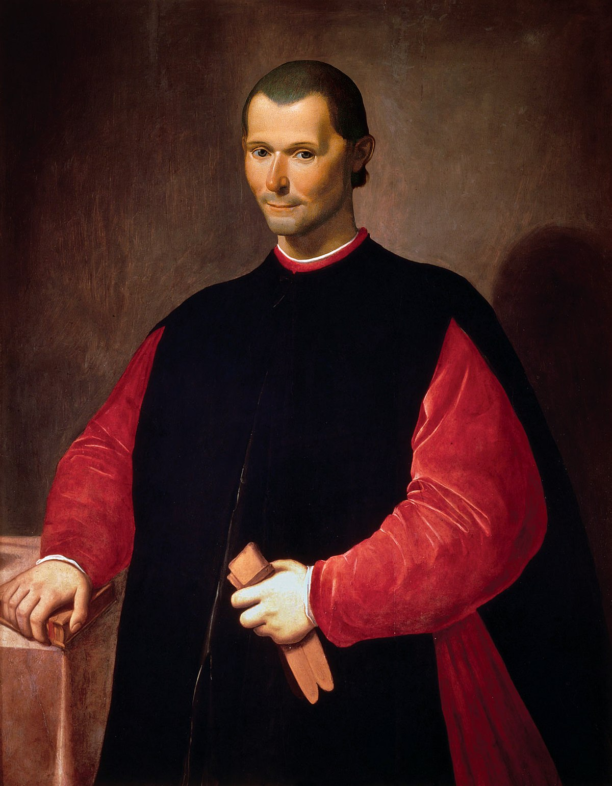

Niccolò Machiavelli è stato un diplomatico, autore, filosofo e storico italiano nato a Firenze il 3 maggio 1469. È noto soprattutto per il suo trattato politico "Il Principe", scritto intorno al 1513 ma pubblicato solo nel 1532, cinque anni dopo la sua morte. Machiavelli è spesso considerato il padre della filosofia politica moderna e della scienza politica. Nel corso della sua carriera, Machiavelli ricoprì diversi incarichi nella Repubblica fiorentina, compreso quello di alto funzionario negli affari diplomatici e militari. Scrisse commedie, canti carnevaleschi e poesie, e anche la sua corrispondenza personale è significativa per storici e studiosi. "Il Principe" è una guida per i governanti su come acquisire e mantenere il potere politico. Machiavelli sostiene che un principe di successo deve essere disposto ad agire in modo immorale e spietato quando necessario, poiché il fine giustifica i mezzi. Sottolinea l'importanza delle apparenze, dell'astuzia e dell'uso della forza per mantenere il controllo sui propri sudditi e nemici. Il lavoro di Machiavelli è stato influente e controverso sin dalla sua pubblicazione. Alcuni la considerano una semplice descrizione della realtà politica, mentre altri la vedono come un manuale per aspiranti tiranni. Nonostante le controversie, le idee di Machiavelli hanno avuto un impatto duraturo sul pensiero politico e continuano a essere studiate e dibattute. Anche le altre opere di Machiavelli, come i "Discorsi su Livio", hanno ricevuto l'attenzione degli studiosi e si dice che abbiano aperto la strada per il repubblicanesimo moderno. Il suo realismo politico ha influenzato generazioni di accademici e politici, tra cui Hannah Arendt e Otto von Bismarck. "Il Principe" di Niccolò Machiavelli delinea diversi principi chiave per i governanti che cercano di acquisire e mantenere il potere politico. Ecco alcuni dei principi più importanti:
Questi principi riflettono il realismo politico di Machiavelli e la sua convinzione che un governante debba essere disposto ad agire in modo deciso e talvolta spietato per mantenere il potere. Sebbene alcuni di questi principi possano essere controversi, hanno avuto un impatto duraturo sul pensiero politico e continuano a essere studiati e dibattuti.
 <-- Home